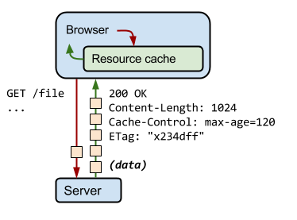
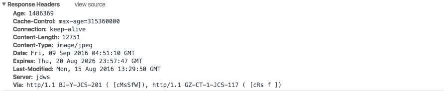
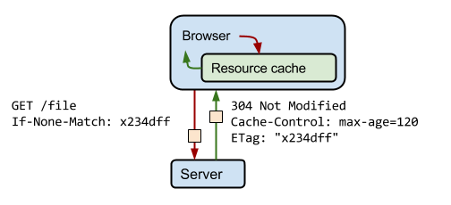
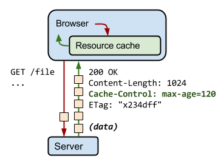
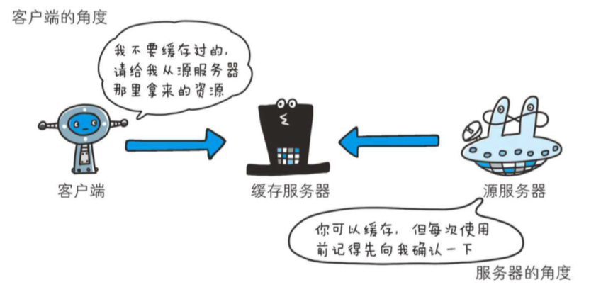

缓存行为主要由缓存策略决定，缓存策略由内容拥有者（服务器）设置，这些策略主要通过特定的 HTTP 头部来清晰地表达。
就是说，缓存在浏览器，缓存策略（HTTP 响应头部）由服务器设置。
服务器在返回响应时，还会发出一组 HTTP 头，用来描述内容类型、长度、缓存指令、验证令牌等。

例如，在上图的交互中，服务器返回了一个 1024 字节的响应，指导客户端缓存响应长达 120 秒，并提供验证令牌（x234dff），在响应过期之后，可以用来验证资源是否被修改。
我在腾讯首页随便找了个 HTTP 请求，我们可以看看下面有
Expires和Cache-Control两个指令。

本地缓存
当用户发起一个静态资源请求的时候，浏览器先在本地查找该资源，如果有发现该资源，而且资源还没有过期，就使用这一个资源，完全不会发送 HTTP 请求到服务器。
协商缓存
让我们假设在缓存的资源过期之后，浏览器又对该资源发起了新请求。
首先，浏览器会检查本地缓存并找到之前的响应，但是这个资源已经过期，无法直接使用。此时，浏览器也可以直接发出新请求，获取新的完整响应，但是这样做效率较低，因为如果资源未被更改过，我们就没有理由再去下载与缓存中已有的完全相同的字节。
现在，问题来了，怎么判断资源未有没有修改过呢？问题的答案就是 ETag，ETag 是一串字符，是服务器会生成的一个随机令牌，我们不用关系 ETag 是怎么生成的。

客户端自动在 If-None-Match 请求头部中提供 ETag 令牌，服务器针对当前的资源检查令牌，如果未被修改过，则返回 304 Not Modified 响应，告诉浏览器缓存中的响应未被修改过，可以再延用 120 秒。
缓存失败
当服务器发现该请求已经修改，或者这是请求一个新的资源（压根没有缓存），服务器则返回该资源的数据，并且返回 200（成功）或者 404（没有该资源）。
Cache-Control
Cache-Control是一个通用首部指令，可以控制谁在什么条件下可以缓存响应以及可以缓存多久。它在HTTP/1.1规范中定义，取代了之前用来定义响应缓存策略的头（例如Expires）。当前的所有浏览器都支持Cache-Control，因此，使用它就够了。
指令的参数是可选的,多个指令之间通过“,”分隔。首部字段 Cache-Control 的指令可用于请求及响应时。
|

no-cache
|
因为 Cache-Control 是通用首部，所以会有两种情况。
（1）客户端发送的请求中如果包含 no-cache 指令
“中间”的缓存服务器必须把客户端的请求转发给源服务器。
（2）服务器返回的响应中包含 no-cache 指令
- 缓存服务器不能对资源进行缓存
- 源服务器以后也将不再对缓存服务器请求中提出的资源有效性进行确认
- 且禁止其对响应资源进行缓存操作

no-store
|
该指令规定不能缓存请求或响应的任一部分。
public 和 private
|
当指定使用 public 指令时,则明确表明其他用户也可利用缓存。private 只为单个用户缓存，不允许任何中继缓存对其进行缓存。
max-age
单位是（秒），响应的最大有效时间值。
废弃和更新已缓存的响应
在资源内容更改时，我们可以更改资源的网址，强制用户下载新响应。通常情况下，可以通过在文件名中嵌入文件的指纹码（或版本号）来实现。
当然，还有更变态的做法，张云龙老师在他的 github 上的这篇文章大公司里怎样开发和部署前端代码？